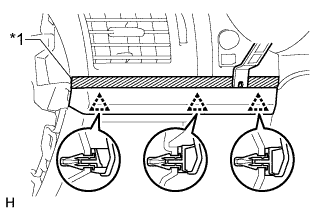
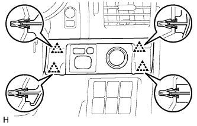
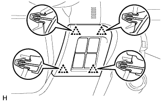
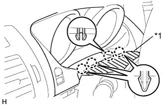
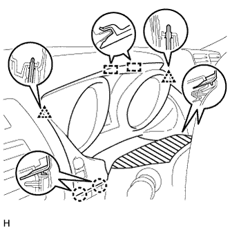
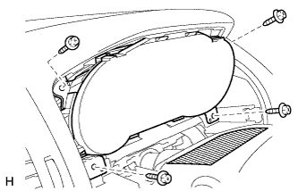

ЩИТОК ПРИБОРОВ > СНЯТИЕ |
| 1. ЗАБЛОКИРУЙТЕ ФУНКЦИЮ АВТОМАТИЧЕСКОГО ОТВОДА/ВОЗВРАТА (для моделей с наклонной телескопической рулевой колонкой с электроприводом) |
Отключите функцию автоматического отвода/возврата, изменив значение настраиваемого параметра (Нажмите здесь).
Установите замок зажигания в положение ON (ВКЛ). С помощью переключателя наклона и телескопического изменения высоты полностью выдвиньте и опустите рулевую колонку.
Выключите зажигание.
| 2. ОТСОЕДИНИТЕ ПРОВОД ОТ ОТРИЦАТЕЛЬНОГО (-) ВЫВОДА АККУМУЛЯТОРНОЙ БАТАРЕИ |
| 3. СНИМИТЕ ДЕКОРАТИВНЫЙ ЭЛЕМЕНТ ОБЛИЦОВКИ ПАНЕЛИ УПРАВЛЕНИЯ (для моделей с левосторонним рулевым управлением) |
|  |
Наложите защитную ленту вокруг декоративного элемента отделочной накладки панели приборов.
| *1 | Защитная клейкая лента |
С помощью съемника молдингов освободите 3 фиксатора и снимите декоративный элемент отделочной накладки панели приборов.
| 4. СНИМИТЕ ОБЛИЦОВКУ ОТДЕЛОЧНОЙ НАКЛАДКИ ПАНЕЛИ ПРИБОРОВ (для моделей с правосторонним рулевым управлением) |
|  |
Освободите 4 фиксатора.
Отсоедините все разъемы и снимите облицовку отделочной накладки панели приборов.
| 5. СНИМИТЕ НИЖНЮЮ ОТДЕЛОЧНУЮ НАКЛАДКУ ПАНЕЛИ ПРИБОРОВ В СБОРЕ |
|  |
Освободите 4 фиксатора.
Отсоедините все разъемы и снимите отделочную накладку панели приборов.
| 6. СНИМИТЕ ОБЛИЦОВКУ ПАНЕЛИ УПРАВЛЕНИЯ В СБОРЕ |
|  |
Наклейте защитную клейкую ленту, как показано на рисунке.
| *1 | Защитная клейкая лента |
Освободите 4 захвата.
|  |
Освободите 4 захвата.
Открепите 2 фиксатора и 2 направляющие.
Отсоедините разъем и снимите отделочную панель.
| 7. СНИМИТЕ ЩИТОК ПРИБОРОВ В СБОРЕ |
|  |
Выверните 4 винта.
Отсоедините разъем и снимите щиток приборов.